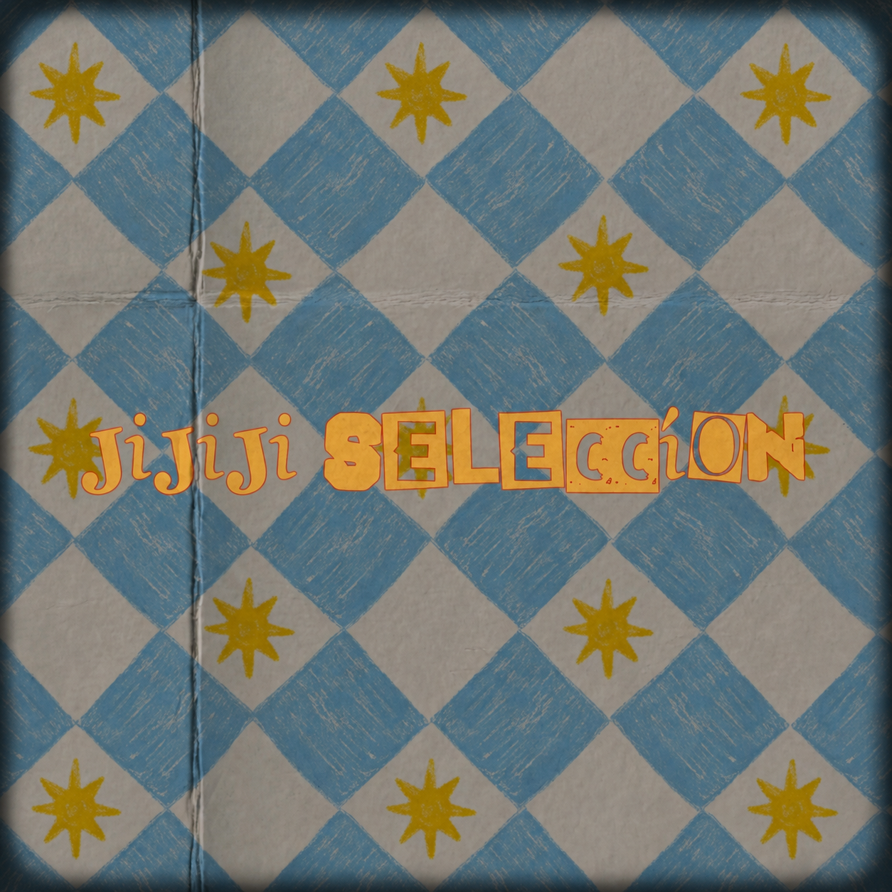

Canciones rock pop
Volumen 1 y 2.
Música con historia
Profesor de Educación Musical | Compositor | Showman
“La guitarra, la voz y la composición como herramientas para plasmar la vida en canciones.”
Canciones con raíz, humor y memoria.
Rock, pop, reggae, música popular y electrónica al servicio de una obra clara, cálida y personal.
Perfil artístico
Profesor · compositor · showman
Sobre mí
Egresado de la Escuela de Arte Leopoldo Marechal (Buenos Aires, Argentina).
Actualmente se desempeña como profesor de música en escuelas primarias de la provincia de Buenos Aires.
Su estilo se nutre de influencias como el rock, pop, reggae, música popular y electrónica, logrando plasmar su obra con carácter y claridad.
Su amplio repertorio propio expresa ideales como el cuidado del medio ambiente, la conciencia por la salud y la educación, y una cosmovisión estoica, llevando siempre como estandarte la amistad, el amor, la vida tranquila y el respeto por la naturaleza.
Padre de Fabricio y Milena (ambos en la universidad). Completan su manada sus tres perritas, Lizy, Daka, Chuwi, y su gato Fermín.
Álbumes destacados
Dos obras de Música Biográfica que rinden homenaje a grandes momentos e iconos de nuestra historia. Haz clic en cada portada para explorar su web interactiva.
Escuchá mi música
Un single destacado para entrar en el universo musical de Juan Enriquez.

Single destacado
Juan Enriquez
Reproductor
Listo para escuchar
Discografía
Un repertorio amplio que cruza educación, memoria, juego, cine, reggae y canción popular.
Volumen 1 y 2.
Música biográfica.
Disco para los más pequeños.
Música biográfica: las películas hechas canciones.
Volumen 1 y 2, bajo la banda Club del Ghetto.
“Hasta la vista baby esto es Esparta”, “La Bilardeada”, entre otros.
Show & Proyectos
Club del Ghetto, Frecuencia 29 y La tercera es la vencida, con recorrido previo por bandas locales como guitarrista.
Stand up y Showman, repertorios que combinan humor y música para toda la familia.
Creador de cuentos infantiles (aún sin publicar) e incursionando como guionista de futuros cortometrajes.
Contacto
Para shows, proyectos educativos, colaboraciones musicales o consultas generales.